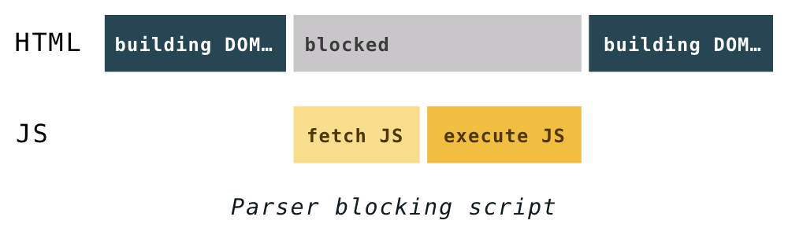
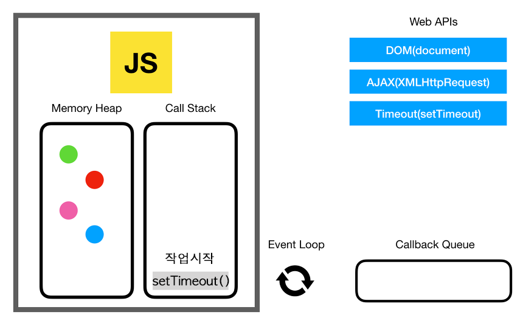
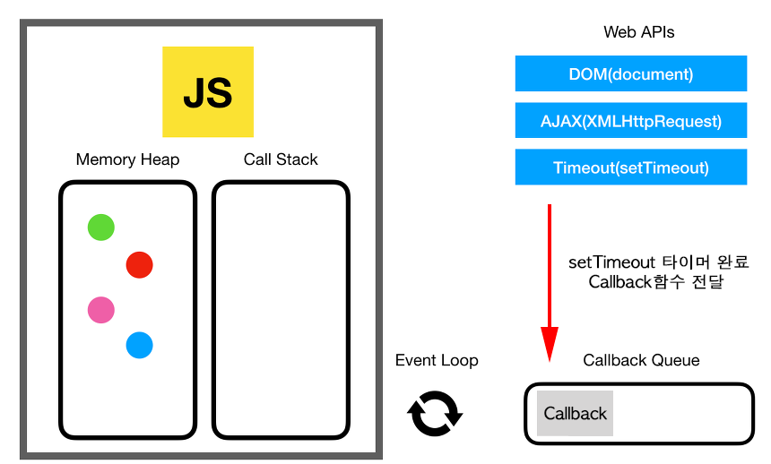
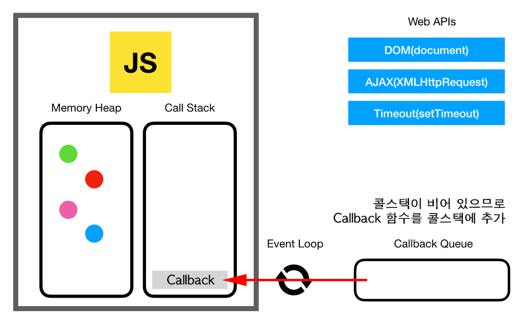

JavaScript - 101
2019. 03. 27
서비스 개발1팀 UI파트 - 김재호
The Agenda
- JavaScript 소개
- JavaScript 시작하기
- 변수와 자료형
- 배열
- 객체
- 원시타입과 참조 타입
- 함수
- 호출스택
- 유효범위
- 객체지향 프로그래밍 (OOP)
- jQuery
JavaScript 소개
JavaScript?

- HTML과 CSS는 정적인 언어
- JavaScript는 HTML과 CSS로 만들어진 웹페이지를 동적으로 변경해주는 언어
- HTML, CSS 기본적인 선행학습 필요
- 작성한 코드를 브라우저에서 바로 실행 가능
JavaScript의 역할
- HTML 엘리먼트 추가/삭제 및 CSS 스타일 변경
- 폼 유효성 검증
- 사용자와의 상호작용 (마우스, 키보드, 터치)
- 웹 브라우저 쿠키 설정/조회
- AJAX 이용한 웹 서버와 통신
과거 JavaScript는?
초창기 웹페이지의 보조적인 기능을 수행하기 위한 용도로 사용
- 1995년 브렌던 아이크(Brendan Eich) 넷스케이프 지원
모카 -> 라이브스크립트 -> 자바스크립트 - 국제 표준화 단체인 ECMA International에서 표준화 진행 (ECMAScript)
- 크로스 브라우징, 보안 취약점 문제
- 전문적이지 못한 인식 (Copy & Paste)
JavaScript 환경 변화
- 데이터의 유형이 텍스트 -> 이미지 -> 미디어로 진화
- 과거에 서버에서 담당하던 역할들이 상당 부분 프론트 이동


- Ajax - 전체 페이지를 다시 렌더링하지 않고 변경되는 부분만 갱신
- jQuery - 보다 쉽게 DOM을 핸들링
- HTML5 - 마크업, JavaScript API를 강화
- NodeJS - 서버 개발 가능, 더 많은 개발자들이 자바스크립트 사용
- ECMAScript2015 (ES6) - 언어로서의 완성도가 높아짐
현재 자바스크립트는?
브라우저에서만 사용하는 용도를 벗어나 다양한 환경에서 폭넓게 활용
- MeanStack (Mongo DB, Express, Angular, Node JS로 구성)
- 클라이언트 / 서버 / 데이터베이스 모두 자바스크립트 기반 (JSON 형태로 통신)
- Front-end, Back-end를 모두 한가지 언어로 작업
- 모바일 앱 (iOS & Android), 데스크탑 앱
SPA (Single Page Application)

- PC → 모바일 사용자의 증가 (느린 네트워크, 사용성 저하, 반응형 이슈)
- 프론트엔드 프레임워크의 강화 (React, Angular, Vue)
- 필요한 모든 정적 리소스를 최초에 한번 다운로드
- 페이지 이동없이 빠르게 화면 전환
- 네이티브 앱과 유사한 사용자 경험 제공
PWA (Progressive Web Apps)
모바일 앱과 웹 기술의 장점을 결합
- 모바일 앱의 단점 (개발, 빌드, 배포, 검색 다운로드, 설치)
- 설치 및 업데이트 없음, 반응형, 홈 화면 아이콘 추가, 오프라인 서비스, 푸시 알림 등 웹에서도 가능 (Service Worker)
JavaScript 시작하기
코드 작성 준비
- HTML 파일 head, body 태그 안에 작성
- script 태그를 사용하여 외부 js 파일 연결
<!-- 내부 스크립트 -->
<script>
//코드 작성
...
</script>
<!-- 외부 스크립트 -->
<script src="ui-base.js"></script>
script 태그 위치
전통적인 방법으로 head 안에 선언
<head>
...
<script src="jquery-1.9.1.min.js"></script>
<script src="ui-base.js"></script>
</head>
브라우저 동작 원리
렌더링 엔진
- 서버로부터 받은 HTML, CSS
- 렌더링 엔진의 HTML 파서, CSS 파서에 의해
- DOM, CSSOM 트리가 만들어지고 렌더 트리로 결합
- 렌더 트리를 기반으로 브라우저는 웹페이지를 표시

자바스크립트 엔진
JS로 작성한 코드를 해석하고 실행하는 인터프리터
- HTML 파서가 DOM 생성중 스크립트 태그를 만나면
- 자바스크립트 로드와 코드를 실행시키기 위해
- 자바스크립트 엔진에게 제어 권한을 넘겨 주게 됨
- HTML 파서가 중단되는 시점 발생
사용자 입장에서 화면 표시 지연
- DOM 트리가 생성되기 전 스크립트에서 DOM을 조작 할 경우 문제 발생
- HTML, CSS를 통해 화면이 모두 표시된 후 스크립트를 실행하는 것이
더 빠르게 느껴지기 때문에 - script 태그는 body 태그 제일 아래에 놓는 것이 좋음
<body>
...
<script src="jquery-1.9.1.min.js"></script>
<script src="ui-base.js"></script>
</body>
async / defer 속성
HTML 해석을 멈추지 않고 동시에 스크립트 로드 (IE 10 이상 지원)
async
스크립트가 다운로드 완료되는 즉시 실행
ui-base2는 ui-base1 보다 먼저 실행될 수 있음 (의존성 고려)
<script async src="ui-base1.js"></script>
<script async src="ui-base2.js"></script>

defer
HTML 해석이 모두 완료된 후 스크립트가 실행 (순서대로)
<script async src="ui-base1.js"></script>
<script async src="ui-base2.js"></script>

변수와 자료형
변수 선언
- var 키워드로 선언
- var는 ES6 이전까지 유일한 변수 선언 방법
- ES6에서 변수 let, 상수 const를 지원
var ssg;
var ssg, emall, smll; //콤마를 이용해 한번에 선언
변수 초기화
- 선언과 동시에 초기화
- 초기값을 지정하지 않으면 해당 값은 undefined
var ssg = '쓱';
var emall;
console.log(emall); //undefined
명명 규칙
- 시작문자는 영문자, _, $ 중 하나로 시작
- 숫자로 시작 할 수 없음
- 대소문자 구분 (완전히 다른변수)
- 이미 정의된 예약어 사용 안됨 (var, function, new, typeof..)
var *count = 0; //SyntaxError 시작문자 특수기호 _ 또는 $ 만 사용
var _count = 0;
var 1st = 0; //SyntaxError 숫자시작
var emartMall = 0;
console.log(emartmall); //SyntaxError 대소문자 구분
var function = 0; //SyntaxError 예약어 사용
명명 기법
- 헝가리안 기법: 변수의 데이터 타입과 용도에 따라 접두사와 함께 붙여 사용
- 카멜 기법: 시작은 소문자, 뒤에 오는 단어 첫번째는 대문자 사용
- 파스칼 기법: 단어의 첫문자를 대문자로 표기
- 언더스코어 기법: 시작문자는 소문자, 단어연결시 언더스코어 사용
보통 카멜기법 - 변수, 함수선언 시 사용
파스칼기법 - 클래스 생성 시 사용
| 명명 기법 | 예시 |
|---|---|
| 헝가리안 기법 | nTotal, aUsers, sName; |
| 카멜 기법 | switchNum; |
| 파스칼 기법 | SwitchNum; |
| 언더스코어 기법 | switch_num; |
변수 사용 시 주의할 점
다른 언어와 다른 JavaScript 특성을 이해하고 변수 사용에 주의
중복 선언
동일한 이름으로 변수 선언 가능, 의도하지 않은 변수값 변경
var mall = 'ssg';
var mall = 'emall'; //중복 선언 시 재정의
console.log(mall); //emall
변수 선언 없이 사용
var 생략시 암묵적으로 변수를 전역화할 수 있으므로 사용하지 않는 것이 좋음
mall = 'ssg';
변수 선언 전 사용
변수가 선언된 위치보다 위에서 참조 가능
function myFunction() {
//Why no ReferenceError?
console.log(foo); //undefined
if(true) {
var foo = 123;
console.log(foo); //123
}
}
myFunction();
변수 호이스팅
코드를 해석하기 전 var 선언 범위를 함수의 상단으로 끌어 올림 (Hoisting)
변수는 함수 최상위에서 선언
function myFunction() {
//var foo;
console.log(foo); //undefined
if(true) {
var foo = 123;
console.log(foo); //123
}
}
myFunction();
데이터 타입
- 기본 자료형 - Number, String, Boolean, undefined, null, Symbol (ES6 추가)
- 객체형 - Object, Function, Array
동적 타입 언어
- 느슨한 타입 언어
- 변수 선언 시 타입을 미리 선언할 필요 없음
- 값을 할당 할 때 데이터 타입이 결정
- 한 변수에 다른 타입의 값으로 할당 가능
var mallCode = 6005; //숫자형 대입
mallCode = 'ssg'; //문자형 대입
mallCode = true; //논리형 대입
데이터 타입 검사
typeof 자바스크립트 자료형의 데이터 타입 확인
var foo = 3;
console.log(typeof foo); //number
foo = 'Hi';
console.log(typeof foo); //string
foo = true;
console.log(typeof foo); //boolean
연산자
기본적으로 다른 언어와 동일한 연산자 사용
+ 연산자
+ 연산자는 숫자끼리의 연산이 아니면 문자열로 자동형변환
숫자 + 숫자 = 숫자
console.log(10 + 20); //30
문자열 + 숫자 = 문자열
console.log('10' + 20) //1020
숫자 + 문자열 = 문자열
console.log(10 + '20'); //1020
문자열 + 문자열 = 문자열
console.log('10' + '20'); //1020
+ 이외의 연산자
+ 연산자를 제외한 사칙 연산자는
피연산자에 문자열이 있을 경우 숫자형으로 자동형변환
console.log('20' - 10); //10
console.log('20' * 10); //200
console.log('20' / 10); //2
console.log('20' % 3); //2
강제형변환
자료형이 자동으로 변환되는 것 이외에 강제로 자료형 변환
- Number()함수는 자료형을 숫자로 바꾸어 반환
- String()함수는 자료형을 문자열로 바꾸어 반환
var input = '10';
문자열 + 숫자
console.log(input + 10); //1010
숫자 + 숫자
console.log(Number(input) + 10); //20
NaN (Not a Number)
숫자이긴 숫자인데 자바스크립트로 나타낼 수 없는 수
문자열을 숫자로 변경할려고 한다면 NaN 반환
var str = 'Hello';
console.log(Number(str)); //NaN
일치 연산자
- ==, != 값이 같으면 true
- ===, !== 값이 같고 데이터 타입 모두 같으면 true
- == 보다는 === 를 쓰는 것을 권장
0 == '0' //true
0 == false //true
1 == true //true
0 === '0' //false
0 === false //false
1 === true //false
삼항 연산자
조건문 ? 참일 때 실행 : 거짓일 때 실행
//IF 문으로 표현한 조건문
if (a > b) {
c = 10;
} else {
c = 20;
}
//삼항 연산자
c = (a > b) ? 10 : 20;
짧은 조건문
논리 연산자인 &&와 ||를 이용하여 조건문 작성
// (조건문) || 조건문이 거짓일 때 실행될 코드
true || alert('실행안됨');
false || alert('실행');
(number % 2 == 0) || alert('홀수입니다');
// (조건문) && 조건문이 참일 때 실행될 코드
true && alert('실행');
false && alert('실행안됨');
(number % 2 == 0) && alert('짝수입니다');
템플릿 문자열
- ES5에서 문자열을 변수와 함께 활용할때 + 연산자 사용
- ES6는 백틱(backtick) 문자 `를 사용
var first = 'John';
var last = 'Smith';
var id = 1234;
//ES5
var name = 'Your name is ' + first + ' ' + last + '.';
var url = 'http://localhost:3000/api/messages/' + id;
//ES6
let name = `My name is ${first} ${last}.`;
let url = `http://localhost:3000/api/messages/${id}`
배열 (Array)
배열 생성
여러 개의 데이터 값을 하나의 변수에 할당할 때 사용
var arr1 = []; //배열 리터럴 사용
var arr2 = new Array();
배열 요소 추가
- 필요한 index 위치에 값 할당 (순서에 맞게 값을 할당할 필요는 없음)
- 값이 할당되지 않은 index 요소의 값은 empty
- 배열의 길이는 마지막 index 기준으로 산정
var fruits = ['사과', '배', '바나나']; //생성과 동시에 값 할당
var fruits = []; //index로 값 할당
fruits[0] = '사과';
fruits[1] = '배';
fruits[2] = '바나나';
var arr = [];
arr[0] = 'one';
arr[3] = 'three';
arr[7] = 'seven';
console.log(arr); //["one", empty × 2, "three", empty × 2, "seven"]
배열 요소 열거
배열 뒤 []안에 index를 넣어 요소에 접근
var fruits = ["사과", "배", "바나나"];
console.log(fruits[0]); //사과
console.log(fruits[1]); //배
console.log(fruits[2]); //바나나
fruits.forEach(function (item, index) {
console.log(item, index); //사과 0, 배 1, 바나나 2
});
배열 메서드
- join – 문자열로 리턴
- reverse – 거꾸로 변경
- sort – 배열 정렬
- concat – 배열 이어 붙임
- slice – 부분 배열 반환
- splice – 삭제/추가
- push, pop – 맨뒤 추가/삭제
- shift, unshift – 맨앞 추가/삭제
객체 (Object)
자동차 객체
모든 자동차는 같은 속성을 가지고 있지만 그 값은 각각 다르고, 다양한 기능을 수행
- 속성 - 이름, 모델, 무게, 색상
- 메서드 - 출발하다(), 정지하다(), 속력을 올리다(), 속력을 줄이다()
| Object | Properties | Methods |
|---|---|---|
| car.name = 제네시스 | car.start() | |
| car.model = G70 | car.stop() | |
| car.weight = 1,695kg | car.speedUp() | |
| car.color = white | car.slowDown() |
객체 생성
- 자바스크립트는 객체 기반 언어
- 기본자료형을 제외한 나머지 함수, 배열, 정규표현식 등 모두 객체
var car = {}; //객체 리터럴 사용
var car = new Object();
객체 속성 (Property)
- 객체는 Key(속성명), Value(값)로 구성
- 빈 객체를 생성하고 변수와 함수를 그 안에 추가
- 이때 선언된 변수를 프로퍼티, 함수는 메서드
//객체 생성 후 프로퍼티를 추가
var car = {};
car.name = '제네시스';
car.model = 'G70';
car.weight = '1,695kg';
//객체 생성과 동시에 프로퍼티를 추가
var car = {
name: '제네시스',
model: 'G70',
weight: '1,695kg'
};
console.log(car.name); //제네시스
객체 메서드 (Method)
메서드 내부의 this는 해당 메소드를 호출한 객체에 바인딩
var car = {
name: '제네시스',
getName: function() {
return this.name;
}
};
var newCar = {
name: 'BMW'
};
newCar.getName = car.getName;
car.getName(); // this는 car, this.name -> 제네시스
newCar.getName(); // this는 newCar, this.name -> BMW
원시 타입과 참조 타입
원시 타입 (Primitives)
값(value)으로 전달되는 데이터 타입
- Number
- String
- Boolean
- Symbol
- undefined
- null
Reference Types
참조(reference)로 전달되는 데이터 타입
- Object
- Function
- Array
원시 타입 복사
변수에 원시 타입 데이터를 할당하면 데이터의 값을 복사
var a = 10; // 변수 a 선언, 값을 10으로 초기화
var b = a; // 새로운 변수에 a값을 복사
b = 20; // b 변수에 저장된 값을 변경하면
// 데이터 값을 복사해서 전달하기 때문에 a의 값은 영향을 받지 않음
console.log(a); // 10
console.log(b); // 20
참조 타입 복사
변수 간 참조 타입 데이터를 할당하면 데이터를 참조로 복사
var x = { count: 100 }; // 참조 타입(객체) 변수 선언
var y = x; // y를 선언하고 x변수 할당, 두 변수는 동일한 주소를 가짐
x.count = 99;
// x, y 모두 같은 객체를 가르키고 있기 때문에 변경 시 동일한 값을 가짐
console.log(y.count); // 99
원시타입 참조 타입 비교
// string 원시타입을 비교할 때 단순히 값이 같은지만 비교
var str1 = 'hello';
var str2 = 'hello';
console.log(str1 === str2); // true
// 동일한 객체에 대한 참조를 가지고 있다면 비교 값은 true
var obj1 = { name: 'kim' };
var obj2 = obj1;
console.log(obj1 === obj2); // true
같은 속성값을 갖고 있더라도 별개의 객체라면 비교 값은 false
var obj1 = { name: 'kim' };
var obj2 = { name: 'kim' };
console.log(obj1 === obj2); // false
같은 속성값을 갖고 있는지 알기 위한 방법으로
두 객체를 string으로 변환한 후 비교
var obj1str = JSON.stringify(obj1);
var obj2str = JSON.stringify(obj2);
console.log(obj1str === obj2str); // true
함수 (Function)
함수 선언
- 함수는 반복 가능한 코드 블록
- 다른 인수를 사용하여 호출, 재사용 가능한 코드
- return 문을 이용해서 값을 반환 할 수 있고, 반환값이 없을 경우 undefined 반환
function 함수이름 (parameter1, parameter2,...) {
//code
}
function add (a, b) {
return a + b;
}
//함수 호출
add(10, 20); //30
함수 표현
모든 함수가 이름을 가질 필요는 없음. 이 같은 함수를 익명 함수
일반적으로 변수에 함수를 저장해서 사용
var add = function (a, b) {
return a + b;
};
add(10, 20); //30
함수 호이스팅
함수 선언 - 선언 순서와 상관없이 어디서나 호출이 가능
foo(); //hello
function foo() {
console.log('hello');
}
함수 표현 - 정의되기 전 코드에서 먼저 호출 할 수 없음
foo(); //TypeError: foo is not a function
var foo = function() {
console.log('hello');
};
함수 표현 구문을 해석해보면
foo 호출하려고 할 때 foo는 함수가 아니라 단순히 선언된 변수일 뿐
var foo;
foo(); //TypeError: foo is not a function
foo = function() {
console.log('hello');
};
함수선언 vs 함수표현
- 함수 선언은 호출 전 반드시 선언해야 한다는 규칙 무시
- 코드 구조를 엉성하게 만들 수 있고, 코드를 해석하는데 있어 혼란
- 함수 선언은 항상 최상위에 작성, 함수 표현 사용을 권장
호출 스택 (Call Stack)
자바스크립트 엔진
구글의 V8 엔진 (크롬, 노드)
- 메모리 힙 — 메모리 할당이 일어나는 영역
- 호출 스택 — 코드가 실행될 때 호출 스택이 쌓이는 영역

단일 호출 스택
자바스크립트는 싱글 스레드 기반 언어, 한 번에 단 하나의 일만 처리
- Last In First Out (LIFO) 데이터 구조 원칙에 따라 작동
- 함수를 호출하면 순차적으로 스택 상단으로 쌓이고
- 실행이 끝나게 되면 스택에서 함수를 제거
function multiply(x, y) {
return x * y;
}
function printSquare(x) {
var s = multiply(x, x);
console.log(s);
}
printSquare(5);
스택 오버플로우
function foo() {
foo();
}
foo();
호출 스택의 실제 크기를 초과하게 되고
브라우저는 다음과 같은 오류를 발생시키는 것으로 함수 종료
단일 호출 스택의 문제점
하나의 호출 스택만 있기 때문에
복잡한 함수를 처리 할 경우 스택을 계속 차지하고 있으면
자바스크립트는 후속 작업들을 처리할 수 없음

호출 스택에서 많은 작업을 처리하기 시작하면
오랜 시간 동안 브라우저가 응답을 멈출 수 있음
자바스크립트 동시성
싱글쓰레드지만 동시성이 필요한 작업들을 Web API를 통해 비동기적으로 대신 처리
타이머, 서버 요청(Ajax)을 기다린다 던지,
DOM에서 발생할 수 있는 이벤트(Click, Mouseover..) 등
실행 환경 (Runtime)
- DOM, AJAX, setTimeout 등의 브라우저에서 제공하는 Web API
- Web API 호출을 통제하기 위한 이벤트 큐, 이벤트 루프도 존재

어떻게 비동기로 작동하는지 살펴봅시다.
setTimeout(function() {
console.log('작업완료');
}, 5000);
코드가 실행되고 콜스택 에는 setTimeout 함수가 추가
setTimeout 함수는 자바스크립트 엔진이 처리하지 않고,
Web API에서 처리, setTimeout 작업 요청과 Callback 함수 전달
콜스택에서는 작업이 완료되고 setTimeout 작업 제거
브라우저는 Web API의 타이머를 생성, 이 타이머가 카운트다운 처리
5초가 지나고, Web API는 콜백 함수를 이벤트 큐(콜백 큐)에 밀어 넣음
이벤트 루프는 항상 콜스택이 비어있는지, 이벤트 큐에 작업이 있는지 검사
만약 콜스택이 비워져있지 않는다면 큐에 쌓여있는 작업을 처리할 수 없음
콜스택이 비어있어 이벤트 큐에서 대기하던 콜백 함수 전달
setTimeout의 delay 0
0초 보다 더 걸리는 이유는?
setTimeout(function() {
console.log('first');
}, 0);
console.log('second');
// second
// first
- setTimeout은 콜스택에서 실행된 후
- Web API의 Timeout API를 호출
- Web API에 의해 setTimeout의 콜백함수는 이벤트 큐에 추가
- console.log('second')가 콜스택에 쌓이고
- second가 실행된 후 콜스택이 비었을 때 first가 콘솔창에 출력
유효범위 (Scope)
자바스크립트의 유효범위
- 전역 (Global Scope) - 코드 어디에서든지 참조
- 지역 (Local Scope or Function-Level Scope) - 정의된 함수 내에서만 참조
전역변수 (Global Scope)
- 자바스크립트는 특별한 시작점이 없음. 코드가 나타나는 즉시 해석되고 실행
- 글로벌 영역에 변수를 선언하면 어디에서든지 참조할 수 있는 전역변수
//Global Scope
var global = 'global'; //전역변수
function foo() {
console.log(global); //global
}
foo();
Non Block-Level Scope
var로 선언된 변수는 Block-Level Scope를 사용하지 않으므로 x는 전역 변수
//Global Scope
if (true) {
var x = 5; //전역변수
}
console.log(x); //5
지역변수 (Function-Level Scope)
- 함수 내에 선언된 변수, 매개변수(parameter)는 해당 함수 내부에서만 사용 가능
- 함수 외부에서는 유효하지 않음
function foo() {
//Local Scope
var local = 'local'; //지역변수
console.log(local); //local
}
foo();
console.log(local); //ReferenceError: local is not defined
전역변수, 지역변수 동일한 이름 사용 시
var global = 'global';
function foo() {
var global = 'local'; //지역변수를 우선하여 참조
console.log(global); //local
}
foo();
console.log(global); //global
스코프 체인
변수를 찾을 때 스코프 체인을 거슬러 올라가며 추적
스코프 체인에서 가장 처음 발견한 변수의 값 반환
var number1 = 1;
//③ func1 부모함수가 없기 때문에 전역 스코프에서 값을 찾음
function func1(){ //② 여기에도 없으면
var number2 = 2;
function func2(){
var number3 = 3;
//① 지역 스코프에서 number1, number2, number3 변수를 찾음
//값이 없으면 부모 함수인 func1에서 검색
console.log(number1 + number2 + number3); //6
}
func2();
}
func1();
클로저 (Closure)
- add()함수가 종료되더라도 내부변수 스코프 객체는 그대로 유지되는 클로저의
속성을 이용 - 비공개(Private) 멤버와 공개(Public) 멤버를 가진 객체를 구현하는 패턴
function add() {
var counter = 0;
return function() { // 내부함수는 외부의 지역변수에 접근 가능
return ++counter; // 반환된 객체를 통해 외부에 counter 공개
};
}
var foo = add(); //add 호출 생성된 객체를 foo에 할당
foo(); //1 이전에 증가된 값이 계속 유지
foo(); //2
var bar = add(); //새로운 인스턴스 bar 생성
bar(); //1 counter가 새롭게 초기화
var 생략 시 암묵적 전역
전역 스코프에서 변수 x를 찾고 존재하지 않으면
변수 x를 암묵적으로 전역변수로 선언
function foo() {
x = 1; //var 생략 시 전역변수
var y = 2;
}
foo();
console.log(x); //1
변수명의 중복
- 파일이 분리되어 있어도 글로벌 스코프는 하나
- 글로벌 스코프에 선언된 변수나 함수는 코드 내의 어디서든지 접근 가능
- 반드시 var를 붙여서 변수 선언 (예상치 못한 결과 발생)
//x.js
function foo (){
// var i = 0;
i = 0;
}
//y.js
for(var i = 0; i < 5; i++){
foo();
console.log(i); //무한 루프
}
<body>
<script scr="x.js"></script>
<script scr="y.js"></script>
</body>
Javascript의 문제점
전역변수 사용으로 인해 잠재적인 오류가 발생 할 수 있음
- 글로벌 스코프가 쉽게 오염
- 동일한 이름을 가진 변수 사용
- 올바른 의존성 순서
- 필요한 코드와 필요하지 않는 코드를 구분하는 것이 매우 어려운 일
최소한의 전역변수 사용
다음과 같이 전역변수 객체 하나를 만들어 사용 (네임스페이스)
//기존에 동일한 이름을 갖는 네임스페이스가 존재하는지 검사
//동일한 이름을 갖는 네임스페이스가 없을 경우에만 네임스페이스를 정의
if(typeof MYAPP === 'undefined') {
var MYAPP = {};
}
//위 코드를 간소화 하면 아래와 같이 작성
var MYAPP = MYAPP || {};
MYAPP.student = {
name: 'Kim',
gender: 'male'
};
console.log(MYAPP.student.name); //Kim
즉시 실행 함수
- 함수의 정의와 동시에 실행되는 함수
- 최초 한번만 호출, 다시 호출할 수 없음
- 이러한 특징을 이용하여 초기화에 사용, 글로벌 영역 오염 방지
//익명 즉시 실행 함수
(function () {
//code
}());
즉시실행함수 전역변수 사용 억제
- 즉시 실행 함수는 즉시 실행되고 그 후 전역에서 바로 사라짐
- 전역변수를 만들지 않으므로 라이브러리 등에 자주 사용
(function() {
var MYAPP = MYAPP || {};
MYAPP.student = {
name: 'Kim',
gender: 'male'
};
console.log(MYAPP.student.name);
//code...
}());
console.log(MYAPP.student.name); //ReferenceError: MYAPP is not defined
객체지향 프로그래밍 (OOP)
객체지향 자바스크립트
- JavaScript는 클래스라는 개념이 없음
- 프로토타입 기반(prototype-based)의 객체지향 언어
- 객체가 다른 객체에 속성들을 물려줄 수 있도록 하기 위해 프로토타입 사용
(코드 재활용)
JavaScript 프로토타입 (Prototype)
자바스크립트의 모든 객체는 자신의 부모 역할을 하는 객체와 연결 (__proto__)
부모 객체의 프로퍼티, 메소드를 상속받아 사용 가능
Object.prototype
객체 리터럴 방식으로 생성된 객체의 경우 부모는 Object.prototype
Object.prototype은 자바스크립트 모든 객체의 최상위 부모
var student = {
name: 'Kim',
score: 90
};
console.log(student.valueOf()); //Object {name: "Kim", score: 90}
student 객체는 __proto__ 라는 숨겨진 내부 프로퍼티에
자신의 부모 Object.prototype 객체와 연결

Object.prototype
Array.prototype
var myArray = [];
console.log(myArray.length); //0
배열 역시 __proto__ 라는 숨겨진 내부 프로퍼티에
자신의 부모 Array.prototype 객체와 연결
모든 배열에 존재하는 length, push(), pop().. 등과 같은 메서드들을 상속

Array.prototype

Function.prototype
function sum(x, y) {
//...
}
__proto__ 라는 숨겨진 내부 프로퍼티에
자신의 부모 Function.prototype 객체와 연결
함수는 prototype 속성을 이용해 또 다른 객체의 원형이 될 수 있음
prototype은 객체를 확장하고 객체 지향적인 프로그래밍이 가능
var Person = (function() {
//생성자 함수 Constructor
function Person(name) {
this._name = name;
}
Person.prototype.sayHi = function () {
console.log('Hi! ' + this._name);
};
return Person;
}());
var me = new Person('Kim'); //new 연산자를 통해 인스턴스를 me 생성
me.sayHi(); //Hi! Kim
var you = new Person('Lee'); //인스턴스 you 생성
you.sayHi(); //Hi! Lee
Function.prototype

자바스크립트의 모든 객체는 Object.prototype을 기반으로 확장
이런 구조로 객체를 확장하는 방식을 프로토타입 기반 프로그래밍
jQuery
- 자바스크립트의 생산성을 향상 (자바스크립트 라이브러리)
- 자바스크립트 코드를 단순하게 유지, 크로스 브라우징 이슈를 쉽게 처리
- HTML 문서(DOM) 탐색, 조작, 이벤트 핸들링, 애니메이션, Ajax
jQuery 사용 준비
index.html
<body>
//...
<script scr="js/lib/jquery-1.9.1.min.js"></script>
<script scr="js/app.js"></script>
</body>
app.js
$(document).ready(function(){
//DOM이 완전히 로드되기 전까지 대기하다가 로드가 완료되면 실행
});
//OR
$(function(){
// Do something...
});
셀렉터 (Selector)
- CSS 스타일의 Selector를 이용하여 요소를 선택
- 자바스크립트 DOM API보다 쉽고 강력하며 유연함
여러개의 요소 선택, li 요소를 선택하고 이 요소들의 텍스트를 일괄 변경
index.html
<ul id="navigation">
<li>신세계몰</li>
<li>이마트몰</li>
<li class="howdy">하우디</li>
</ul>
app.js
$(function(){
console.log($('li'));
$('li').text('SSG');
});
Pure JavaScript
app.js
var targets = document.getElementsByTagName('li');
for(var i = 0; i < targets.length; i++){
// text노드를 선택한 후, text를 변경
targets[i].firstChild.nodeValue = 'SSG';
}
Tag, ID, Class Selector
가능하면 ID selector를 사용
document.getElementById()를 사용하기 때문에 ID selector가 빠름
app.js
//Tag Selector
$('li');
//ID Selector
$('#container');
//Class Selector
$('.articles');
DOM 탐색
- 자신의 1 level 상위에 속하는 요소를 부모 요소
- 1 level 하위에 속하는 요소를 자식 요소
- 특정 id를 기준으로 자식 element 목록을 탐색할 때는 .find()를 사용
index.html
<ul id="navigation">
<li>신세계몰</li>
<li>이마트몰</li>
<li class="howdy">하우디</li>
</ul>
app.js
$('#navigation').find('.howdy').css('color', 'red');
DOM 조작
DOM에 새로운 요소를 추가/삭제, 복사, 속성 변경
index.html
<div class="item">
<h3 class="name">미네랄 워터 생수</h3>
<button>가격보기</button>
</div>
app.js
//append() 새로운 요소 추가
var price = $('<span>할인적용가 2,520</span>');
$('.item').append(price);
//remove() 요소 제거
$('button').remove();
DOM에 콘텐츠를 삽입할 때, 위치를 지정
index.html
[before]
<div class="item">
[prepend]
<h3 class="name">미네랄 워터 생수</h3>
<button>가격보기</button>
[append]
</div>
[after]
app.js
$('.item').prepend(price); //선택 요소의 여는 태그 뒤
$('.item').append(price); //선택 요소의 닫는 태그 앞
$('.item').before(price); //선택 요소의 앞
$('.item').after(price); //선택 요소의 뒤
Event
이벤트를 바인딩하고 해당 이벤트가 발생했을 때 실행될 콜백 함수를 지정
버튼을 클릭하면 가격 보기, 버튼 삭제하기
index.html
<div class="item">
<h3 class="name">미네랄 워터 생수</h3>
<button>가격보기</button>
</div>
app.js
$('button').on('click', function (e) {
var price = $('<span>할인적용가 2,520</span>');
$('.item').append(price);
$('button').remove();
});
- 상품이 여러개 있을 경우, 모든 버튼요소가 제거, 가격이 변경
- 이벤트가 발생한 상품 버튼만 제거되고 가격이 표시 되도록 수정
app.js
//$(this)는 $(e.target)
//closest() 메서드는 가장 근접한 상위 요소를 반환
$('button').on('click', function (e) {
var price = $('<span>할인적용가 2,520</span>');
$(this).closest('.item').append(price);
$(this).remove();
});
jQuery 플러그인
기존 기능을 확장할 수 있게 도와주는 프로그램
자주 사용되는 기능들을 플러그인으로 제작해서 사용
어떤 플러그인 사용해야 할까요?
- 오픈소스의 중요 요소들 - 안정성, 충분한 문서 (기능 설명, 데모, 브라우저 지원범위)
- Github star 또는 fork 수
- 적극적인 유지 관리
- 외부 커뮤니티 (StackOverflow)에 그 플러그인에 대한 질문, 답